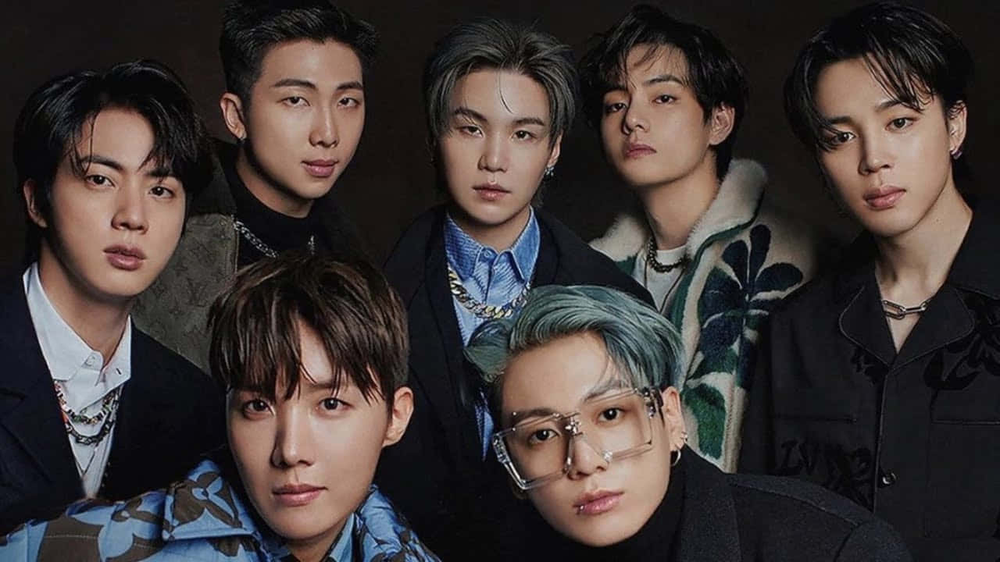

Lets get to know about BTS (Bangtan Sunandan)
BTS (Korean: 방탄소년단; RR: Bangtan Sonyeondan; lit. Bulletproof Boy Scouts), also known as the Bangtan Boys, is a South Korean boy band formed in 2010. The band consists of Jin, Suga, J-Hope, RM, Jimin, V, and Jungkook, who co-write or co-produce much of their material. Originally a hip hop group, they expanded their musical style to incorporate a wide range of genres, while their lyrics have focused on subjects including mental health, the troubles of school-age youth and coming of age, loss, the journey towards self-love, individualism, and the consequences of fame and recognition. Their discography and adjacent work has also referenced literature, philosophy and psychology, and includes an alternate universe storyline. BTS debuted in 2013 under Big Hit Entertainment with the single album 2 Cool 4 Skool. BTS released their first Korean and Japanese-language studio albums, Dark & Wild and Wake Up respectively, in 2014. The group's second Korean studio album, Wings (2016), was their first to sell one million copies in South Korea. By 2017, BTS had crossed into the global music market and led the Korean Wave into the United States, becoming the first Korean ensemble to receive a Gold certification from the Recording Industry Association of America (RIAA) for their single "Mic Drop", as well as the first act from South Korea to top the Billboard 200 with their studio album Love Yourself: Tear (2018). In 2020, BTS became one of the few groups since the Beatles (in 1966–1968) to chart four US number-one albums in less than two years, with Love Yourself: Answer (2018) becoming the first Korean album certified Platinum by the RIAA; in the same year, they also became the first all-South Korean act to reach number one on both the Billboard Hot 100 and Billboard Global 200 with their Grammy-nominated single "Dynamite". Follow-up releases "Savage Love", "Life Goes On", "Butter", and "Permission to Dance" made them the fastest act to earn four US number-one singles since Justin Timberlake in 2006.
